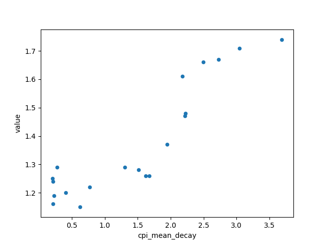
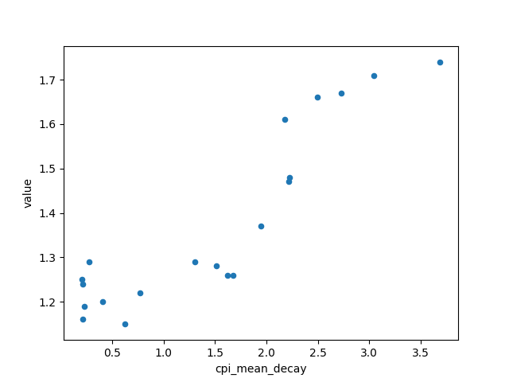

Predict Marriages and Birth Rates with Economic Data (the Long Way)
This project aims to predict Singapore's number of marriages and crude birth rate using economic data. This guide provides a step-by-step approach to every mistake I have made, so take this tutorial with a pinch of salt.
Step 1: Choosing features
The first step to a good machine learning model is always to choose the right features for your predictions.
My original intentions had been to select a mix of both social and economic indicators and compare their
relative accuracy in predicting birth rates/marriages, and also to combine some of these factors to obtain
socio-economic indicators.
For Singapore data, a few of the sites that I consulted are:
- Data.gov: ended up being my only source of data
- Singstat: datasets tended to be too small
- LTA Data Mall: I was impressed by the amount of data, but not relevant
- Many other open source data on Singapore that was sadly irrelevant
A big drawback for me was that I could not find any datasets on social indicators that went far enough back
(at least 1995) for me to have a sizeable dataset. While kind of comprehensive, the data on data.gov was also lacking in
data with causal relationships, making it difficult to explore predictive models using the available data.
In the end, I settled with what I had (for now):
X data:
- Year (I was expecting this to be a problem due to correlation issues)
- Consumer Price Index, Monthly
- Gross Domestic Product at Current Market Prices, Annually
- Job Vacancy Rate, Quarterly
- Resident Unemployment Rate, Quarterly
- Average Weekly Paid Overtime Hours per Employee, Quarterly
Y data
- Crude Birth Rates, Annually
- Marriages under the Womens' Charter, Annually
- Total Fertility Rate, Annually (I actually made a huge mistake and mixed up birth rates and TFR, so I had to redo some of my training)
All the data was obtained from data.gov in csv file format.
Step 2: Cleaning the Data
Cleaning the data proved to be more problematic than I thought it would be. Since the predicted values are annual data, I
decided to process the quarterly and monthly data to return annual figures of [mean, standard deviation, direction, correlation].
"Direction" and "Correlation" will be elaborated on more later.
I used the pandas dataframe for data processing. It was a pain to pick up, but ultimately useful as it is an organised
way to handle data that can be extended to large datasets, and has many built-in functions that make data processing
not that difficult (e.g. iterrows, df.loc, df.apply). Pandas dataframes are also a well-supported type in python, and is handled
with no problem by scikit-learn.
The processing steps were:
1. Split up the monthly and quarterly date data
Date data was split from "YYYY-month" or "YYYY-quarter" into "YYYY", then subsequent columns for each sub-division. This makes processing
later on much easier as data from each subdivision are later handled as features of that year.
2. Handle empty values
Empty values are usually handled later on with the rest of the feature processing steps, but I had to handle them now as I was
planning to use linear regression to obtain more features from sub-divided years, and linear regression cannot handle null values. Null values
were simply replaced with the mean of the other values in the column.
3. Perform linear regression
Let linear regression be y = Ax+b. In this case, the y values are the quarterly or monthly data in each year, the x value is the sub-division
of the y data in the year (ranging from 0 to 1). A linear regression is performed on each year and the "Direction" feature refers to the variable
A in (y=Ax+b), while the feature "correlation" refers to the coefficient of determination, giving the strength of the linear relationship between
x and y. The linear regression was performed using sklearn LinearRegression method.
After going in to do some simple data procesing myself (deleting columns etc.), the data is now ready for further processing.
Step 3: Data Exploration
Now that the data has been prettified, it is time for some visualisation to gain insights on the data on hand. From here on, I will foxus on total Fertility
rate as the predicted y value.
First, I combined all the features into one large features dataframe. I was initially considering adding polynomial features and performing PCA
to narrow down the feature space, but after performing train-test split, my number of data points and number of features became comparable and I did not
want to risk having too many features.
Next, I looked at the correlations between the y data and each of the features. By using the pandas .coor() function, I obtained a list of
correlations.
python3 regression_methods.py
value 1.000000
overtime_mean 0.854868
jobvac_mean 0.776832
jobvac_std 0.736551
jobvac_corr 0.624030
overtime_std 0.567258
cpi_corr 0.464942
unemp_dir 0.249930
labcost_dir 0.120821
labcost_corr 0.029503
unemp_std 0.014350
labcost_std -0.076240
cpi_dir -0.132496
unemp_corr -0.192243
overtime_corr -0.243318
cpi_std -0.272496
labcost_mean -0.414698
overtime_dir -0.427331
unemp_mean -0.523999
jobvac_dir -0.724803
cpi_mean -0.767823
gdp_value -0.827605
year -0.918486
Name: value, dtype: float64
Here you can see that "year" is most highly correlated with the TFR, which may present as a problem by creating a model that suggests that Singapore's
falling birth rate is inevitable. "Overtime_mean" is also highly correlated with TFR, however there is the problem of correlation vs. causation,
and the causal effect between these two variables is unclear.
To gain greater insights, I picked 6 of the features most linearly correlated with total fertility rates and plotted them all against each other in a scatter plot:
From the scatter plot we can see that the relationship between "year" and TFR more closely follows an exponential function, as well as with other factors "gdp_value" and "cpi_mean". Thus, I performed an exponential decay function on these three features to hopefully give a better linear correlation between the features and the y value.


 

After fitting the exponential function, the improvement looks marginal in the scatter plot, but the correlation values showed a small improvement and I decided to just take what I have and move on to the transformation pipeline.
python3 regression_methods.py
Correlation matrix for decay features:
value 1.000000
year_decay 0.975068
gdp_value_decay 0.937049
cpi_mean_decay 0.904391
overtime_mean 0.854868
jobvac_mean 0.776832
jobvac_std 0.736551
jobvac_corr 0.624030
overtime_std 0.567258
cpi_corr 0.464942
unemp_dir 0.249930
labcost_dir 0.120821
labcost_corr 0.029503
unemp_std 0.014350
labcost_std -0.076240
cpi_dir -0.132496
unemp_corr -0.192243
overtime_corr -0.243318
cpi_std -0.272496
labcost_mean -0.414698
overtime_dir -0.427331
unemp_mean -0.523999
jobvac_dir -0.724803
cpi_mean -0.767823
gdp_value -0.827605
year -0.918486
Name: value, dtype: float64
Step 4: Pipeline
A pipeline is a series of transformers applied to the data before it is used for training a model. Each transformer
has a fit() and transform() function (as explained in SKLearn Tips and Tricks) and are applied sequentially on the
data fed into the pipeline. For processing the data for a regression model, my sklearn pipeline consists of the
SimpleImputer and StandardScaler.
The SimpleImputer is a transformer provided by sklearn that helps to fill in null values. By specifying the strategy
as "mean", I am filling in the null values with the mean of all the other values in the column. However, much of the null
values in the data have already been handled in an earlier part to obtain additional features through linear regression,
thus the Imputer here is for additional checking for null values, and to process future data. The StandardScaler
scales the data to a certain mean and range. Of the two available strategies, standard-deviation and min-max, I chose to implement
the stndard-deviation strategy as it is less affected by outliers.
Step 5: Testing Regression Methods
After preparing the data for the various sklearn regressions, it is now easy to test out the data
on multiple kinds of regression models. The few that I have chosen are: linear regression, decision tree
regressor, random forest regressor and SVM regressor (with linear, poly, rbf and sigmoid kernels). I decided
against a polynomial regression as the large number of features will make the number of combinations
expand very rapidly, and my data set will become much smaller than the number of features (resulting in the
curse of dimentionality).
After training the training data using the models stated above, I evaluated the error of the models on the
training data itself:
python3 -c 'import regression_methods; InitialRegression(training_set_err)'
Error on training set for linear regression: 2.764433037591714e-16
Error on training set for decision tree regressor: 0.0
Error on training set for random forest regressor: 0.02825774230188955
python3 -c 'import regression_methods;InitialRegressionSVM(training_set_err)'
Error on training set for SVM linear regression: 0.07440866416057071
Error on training set for SVM poly regression: 0.07199860703890534
Error on training set for SVM rbf regression: 0.08604743906320432
Error on training set for SVM sigmoid regression: 0.07307290024471638
It can be seen that the linear regression and decision tree regressor appear to overfit the training data quite badly, resulting in an extremely small error. Further evaluation of the models are done with a Leave-One-Out cross validation test (a comparison of LOOC and K-Out CV can be found on the Machine Learning Tips page) and errors are as shown:
python3 -c 'import regression_methods; InitialRegression(cross_validation_err)'
Cross Validation error for linear regression:
Scores: [0.054842 0.00399597 0.03568356 0.13978444 0.04281256 0.04604125 0.05829293
0.07240102 0.01860834 0.00776581 0.01481755 0.00364524 0.05873764 0.02579565 0.09859207
0.15252078 0.07862143 0.00330323 0.07660888 0.53208627]
Mean: 0.07624783154544243
Standard deviation: 0.11248767941765023
Cross Validation error for decision tree regressor:
Scores: [0.21 0.08 0.05 0.14 0.1 0. 0.1 0.01 0.18 0.06 0.06 0.06 0.04 0.03 0.04 0.19
0.1 0.06 0.05 0.11]
Mean: 0.0835
Standard deviation: 0.05694514904713128
Cross Validation error for random forest regressor:
Scores: [0.111 0.109 0.08 0.02 0.035 0.03 0.067 0.054 0.035 0.073 0.053 0.001 0.064
0.114 0.089 0.005 0.036 0.02 0.024 0.044]
Mean: 0.05319999999999999
Standard deviation: 0.0335687354542884
python3 -c 'import regression_methods;InitialRegressionSVM(training_set_err)'
Cross Validation error for SVM linear regression:
Scores: [0.09080374 0.11937214 0.07250952 0.02995561 0.1213769 0.07664682 0.01063642
0.0770035 0.11281128 0.12311391 0.0753716 0.05734756 0.15617136 0.05845668 0.01405324
0.06087444 0.03156834 0.08382428 0.0609033 0.05759235]
Mean: 0.07451965069118438
Standard deviation: 0.03731505145643753
Cross Validation error for SVM poly regression:
Scores: [0.0639619 0.08832214 0.06911489 0.00294872 0.14626911 0.06799292 0.01059334
0.14858441 0.22023286 0.16793713 0.07181147 0.04379031 0.17939204 0.04106339 0.01160151
0.14913094 0.0542449 0.04976189 0.07783498 0.05844717]
Mean: 0.0861518011138705
Standard deviation: 0.059731644134825415
Cross Validation error for SVM rbf regression:
Scores: [0.09845441 0.18313329 0.10534654 0.07050253 0.15375965 0.09234144 0.05357059
0.10884812 0.13208508 0.10881556 0.18629143 0.07108267 0.18490334 0.19231357 0.00442793
0.07041296 0.01779497 0.08402715 0.10365277 0.08741709]
Mean: 0.10545905412234675
Standard deviation: 0.05230333381419113
Cross Validation error for SVM sigmoid regression:
Scores: [0.10538674 0.10699255 0.06575242 0.01325729 0.10146539 0.07935778 0.01314629
0.04998052 0.08224383 0.11372819 0.0610924 0.05436151 0.14048255 0.07774499 0.01526464
0.04585146 0.00466904 0.0826025 0.06211805 0.08907408]
Mean: 0.0682286110514455
Standard deviation: 0.03629890887323988
It can be seen that the error on the cross validation test for the linear regression and
decision tree regressor is much larger (of multiple orders of magnitude) than the error on
the whole training set, showing that the linear regression and decision tree regressor has indeed
badly overfitted the training data.
After performing the training and cross validation for each regression method,
I decided to go with the Random Forest Regressor (CV error: 0.0531±0.0335) as top
choice and the SVM sigmoid regression (CV error: 0.0682±0.0362) as second choice for proceeding
with the fine-tuning of the models.